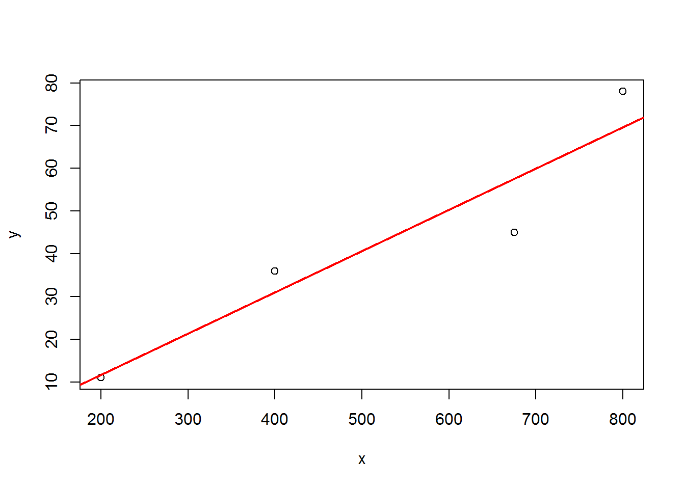
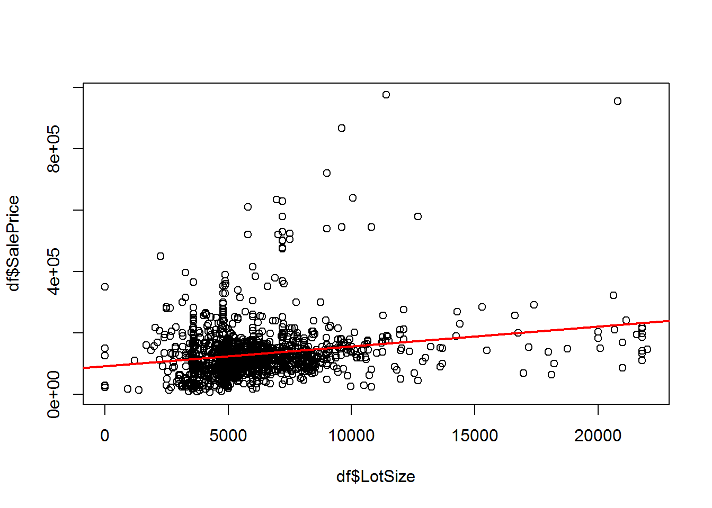

7 Lab - Bivariate Regression
Complete the following exercises in Chapter 8 (Introduction to Regression Analysis) of the textbook [R] pages 247-250.
7.1 Question 1
This is Exercise 1 in Chapter 8 of the Textbook [R].
A regression of weekly shopping trip frequency on annual income (data entered in thousands of dollars) is performed on data collected from 24 respondents. The results are summarized below:
- Intercept: 0.46
- Slope: 0.19
| Sum of squares | Degrees of freedom | Mean square | F | |
|---|---|---|---|---|
| Regression | ||||
| Residual | 1.7 | |||
| Total | 2.3 |
7.1.1 Question 1(a)
Fill in the blanks in the ANOVA table.
n <- 24
intercept <- 0.46
slope <- 0.19
TSS <- 2.3 # Total sum of squares
RSS <- 1.7 # Residual sum of squares
MSS <- TSS - RSS # Model sum of squares
df1 <- 1
df2 <- n-2
msq1 <- MSS/df1 # mean square of regression 0.6
msq2 <- RSS/df2 # mean square of residual 0.077
F.value <- msq1/msq2 # 7.76| Sum of squares | Degrees of freedom | Mean square | F | |
|---|---|---|---|---|
| Regression | 0.6 | 1 | 0.6 | 7.7647059 |
| Residual | 1.7 | 22 | 0.0772727 | |
| Total | 2.3 | 23 |
7.1.2 Question 1(b)
What is the predicted number of weekly shopping trips for someone making $50,000/year?
y <- intercept + slope * (50000/1000) # y = 9.96
y## [1] 9.967.1.3 Question 1(c)
In words, what is the meaning of the coefficient 0.19?
The meaning is that for every increase in annual income equal to $1000, the predicted weekly shopping trip frequency will increase by 0.19.
7.1.4 Question 1(d)
Is the regression coefficient significantly different from zero? How do you know?
F.critical <- qf(0.95,df1,df2) # 4.30
if(F.value > F.critical) {
print("We reject the null hypothesis")
} else {
print("We fail to reject the null hypothesis")
}## [1] "We reject the null hypothesis"# since F.value > F.critical, we reject the null hypothesis. In other words, the regression coefficient is significantly different from zero7.1.5 Question 1(e)
What is the value of the correlation coefficient?
r.sq <- MSS/TSS # R2 = 0.26
r <- sqrt(r.sq) # r = 0.51The correlation coefficient is 0.51
7.2 Question 2
This is Exercise 6 in Chapter 8 of the Textbook [R].
The following data are collected in an effort to determine whether snowfall is dependent upon elevation:
| Snowfall (inches) | Elevation (feet) |
|---|---|
| 36 | 400 |
| 78 | 800 |
| 11 | 200 |
| 45 | 675 |
Using R, show your work on exercises (a) through (g).
7.2.1 Question 2(a)
Find the regression coefficients (the intercept and the slope coefficient).
y <- c(36,78,11,45)
x <- c(400,800,200,675)
n <- length(y)
m <- lm(y~x)
summary(m)##
## Call:
## lm(formula = y ~ x)
##
## Residuals:
## 1 2 3 4
## 4.9772 8.3172 -0.6928 -12.6016
##
## Coefficients:
## Estimate Std. Error t value Pr(>|t|)
## (Intercept) -7.63721 13.67764 -0.558 0.6328
## x 0.09665 0.02403 4.022 0.0566 .
## ---
## Signif. codes: 0 '***' 0.001 '**' 0.01 '*' 0.05 '.' 0.1 ' ' 1
##
## Residual standard error: 11.25 on 2 degrees of freedom
## Multiple R-squared: 0.8899, Adjusted R-squared: 0.8349
## F-statistic: 16.17 on 1 and 2 DF, p-value: 0.05663intercept <- coefficients(m)[1]
slope <- coefficients(m)[2]intercept = -7.637206
slope = 0.09665
7.2.2 Question 2(b)
Estimate the standard error of the residuals about the regression line.
# use the equation on page 236 of the textbook
se <- sqrt(sum(residuals(m)^2)/(n-2)) # 11.252The standard error of the residuals is: 11.2522747
7.2.3 Question 2(c)
Test the hypothesis that the regression coefficient associated with the independent variables is equal to zero. Also place a 95% confidence interval on the regression coefficient.
summary(m)##
## Call:
## lm(formula = y ~ x)
##
## Residuals:
## 1 2 3 4
## 4.9772 8.3172 -0.6928 -12.6016
##
## Coefficients:
## Estimate Std. Error t value Pr(>|t|)
## (Intercept) -7.63721 13.67764 -0.558 0.6328
## x 0.09665 0.02403 4.022 0.0566 .
## ---
## Signif. codes: 0 '***' 0.001 '**' 0.01 '*' 0.05 '.' 0.1 ' ' 1
##
## Residual standard error: 11.25 on 2 degrees of freedom
## Multiple R-squared: 0.8899, Adjusted R-squared: 0.8349
## F-statistic: 16.17 on 1 and 2 DF, p-value: 0.05663anova(m)## Analysis of Variance Table
##
## Response: y
## Df Sum Sq Mean Sq F value Pr(>F)
## x 1 2047.77 2047.77 16.173 0.05663 .
## Residuals 2 253.23 126.61
## ---
## Signif. codes: 0 '***' 0.001 '**' 0.01 '*' 0.05 '.' 0.1 ' ' 1# p-value: 0.05663
# p-value > 0.05, so we fail to reject the null hypothesis that the regression coefficient associated with the independent variables is equal to zero
confint(m)## 2.5 % 97.5 %
## (Intercept) -66.487337152 51.2129252
## x -0.006754067 0.2000541# 2.5 % 97.5 %
# (Intercept) -66.487337152 51.2129252
# x -0.006754067 0.20005417.2.4 Question 2(d)
Find the value of \(r^2\).
summary(m)##
## Call:
## lm(formula = y ~ x)
##
## Residuals:
## 1 2 3 4
## 4.9772 8.3172 -0.6928 -12.6016
##
## Coefficients:
## Estimate Std. Error t value Pr(>|t|)
## (Intercept) -7.63721 13.67764 -0.558 0.6328
## x 0.09665 0.02403 4.022 0.0566 .
## ---
## Signif. codes: 0 '***' 0.001 '**' 0.01 '*' 0.05 '.' 0.1 ' ' 1
##
## Residual standard error: 11.25 on 2 degrees of freedom
## Multiple R-squared: 0.8899, Adjusted R-squared: 0.8349
## F-statistic: 16.17 on 1 and 2 DF, p-value: 0.05663# R2 = 0.88997.2.5 Question 2(e)
Make a table of the observed values, predicted values, and the residuals.
df <- data.frame(x,y)
df$predict <- fitted(m)
df$residual <- residuals(m)
library(knitr)
kable(df)| x | y | predict | residual |
|---|---|---|---|
| 400 | 36 | 31.02281 | 4.9771917 |
| 800 | 78 | 69.68282 | 8.3171775 |
| 200 | 11 | 11.69280 | -0.6928011 |
| 675 | 45 | 57.60157 | -12.6015681 |
7.2.6 Question 2(f)
Prepare an analysis of variance table portraying the regression results.
am <- anova(m)
MSS <- am["Sum Sq"][[1]][1]
RSS <- am["Sum Sq"][[1]][2]
TSS <- MSS+RSS
df1 <- am["Df"][[1]][1]
df2 <- am["Df"][[1]][2]
df3 <- df1+df2
msq1 <- am["Mean Sq"][[1]][1]
msq2 <- am["Mean Sq"][[1]][2]
F.value <- am["F value"][[1]][1]| Sum of squares | Degrees of freedom | Mean square | F | |
|---|---|---|---|---|
| Regression | 2047.7726301 | 1 | 2047.7726301 | 16.173391 |
| Residual | 253.2273699 | 2 | 126.613685 | |
| Total | 2301 | 3 |
7.2.7 Question 2(g)
Graph the data and the regression line.
plot(x,y)
abline(m,col="red",lwd=2)
7.3 Question 3
This is Exercise 10 in Chapter 8 of the Textbook [R].
Use R and the Milwaukee dataset to:
7.3.1 Problem
perform a regression using sales price as the dependent variable and lot size as the independent variable.
7.3.2 Solution
url = "http://spatial.binghamton.edu/geog533/data/Milwaukee_Sales.csv"
df <- read.csv(url,header = TRUE)
m <- lm(SalePrice ~ LotSize,data = df)
summary(m)##
## Call:
## lm(formula = SalePrice ~ LotSize, data = df)
##
## Residuals:
## Min 1Q Median 3Q Max
## -144724 -42205 -14553 20987 808570
##
## Coefficients:
## Estimate Std. Error t value Pr(>|t|)
## (Intercept) 9.298e+04 5.249e+03 17.715 < 2e-16 ***
## LotSize 6.443e+00 7.835e-01 8.223 4.37e-16 ***
## ---
## Signif. codes: 0 '***' 0.001 '**' 0.01 '*' 0.05 '.' 0.1 ' ' 1
##
## Residual standard error: 83090 on 1447 degrees of freedom
## Multiple R-squared: 0.04464, Adjusted R-squared: 0.04398
## F-statistic: 67.62 on 1 and 1447 DF, p-value: 4.374e-16plot(df$LotSize,df$SalePrice)
abline(m,col="red",lwd=2)
7.4 Question 4
This is Exercise 11 in Chapter 8 of the Textbook [R].
Use R and the Hypothetical UK Housing Prices dataset to:
7.4.1 Question 4(a)
perform a regression using house price as the dependent variable, and number of bedrooms as the independent variable;
url = "http://spatial.binghamton.edu/geog533/data/UK_Housing.csv"
df <- read.csv(url,header = TRUE)
m <- lm(df$price~df$bedrooms)
summary(m)##
## Call:
## lm(formula = df$price ~ df$bedrooms)
##
## Residuals:
## Min 1Q Median 3Q Max
## -39324 -11511 -3539 8461 107568
##
## Coefficients:
## Estimate Std. Error t value Pr(>|t|)
## (Intercept) 11254.1 2312.7 4.866 1.53e-06 ***
## df$bedrooms 11892.6 876.5 13.568 < 2e-16 ***
## ---
## Signif. codes: 0 '***' 0.001 '**' 0.01 '*' 0.05 '.' 0.1 ' ' 1
##
## Residual standard error: 17800 on 497 degrees of freedom
## Multiple R-squared: 0.2703, Adjusted R-squared: 0.2688
## F-statistic: 184.1 on 1 and 497 DF, p-value: < 2.2e-167.4.2 Question 4(b)
repeat part (a), using the number of bathrooms as the independent variable, and comment on the results.
m <- lm(df$price~df$bathrooms)
summary(m)##
## Call:
## lm(formula = df$price ~ df$bathrooms)
##
## Residuals:
## Min 1Q Median 3Q Max
## -34955 -15242 -5342 10908 114658
##
## Coefficients:
## Estimate Std. Error t value Pr(>|t|)
## (Intercept) 32729 3149 10.394 < 2e-16 ***
## df$bathrooms 7113 2682 2.653 0.00824 **
## ---
## Signif. codes: 0 '***' 0.001 '**' 0.01 '*' 0.05 '.' 0.1 ' ' 1
##
## Residual standard error: 20690 on 497 degrees of freedom
## Multiple R-squared: 0.01396, Adjusted R-squared: 0.01198
## F-statistic: 7.036 on 1 and 497 DF, p-value: 0.0082457.5 Question 5
Download the hometown.csv, append your name and hometown coordinates to the csv, then use leaflet to create a web map (10 pt.)
if(!require(leaflet)) install.packages("leaflet")
library(leaflet)
df <- read.csv("http://spatial.binghamton.edu/leaflet/hometown.csv")
#df <- read.csv("hometown.csv")
df$latitude = as.character(lapply(strsplit(as.character(df$location), split=","), "[", 1))
df$longitude = as.character(lapply(strsplit(as.character(df$location), split=","), "[", 2))
df$fullname <- paste(df$firstname,df$lastname)
df$popup <- paste("<center><h4>",df$fullname,"</h4></center>","<img src=",df$image," width='200px'/>",sep = "")
#write.csv(df,"hometown.csv",row.names = FALSE)
leafIcons <- icons(
iconUrl = ifelse(df$type == "grads",
"http://spatial.binghamton.edu/leaflet/images/Blue.png",
"http://spatial.binghamton.edu/leaflet/images/Red.png"))
leaflet(df,width = "100%",height = 800) %>%
addTiles(group = "OSM (default)") %>%
addProviderTiles(provider = "Esri.WorldStreetMap",group = "World StreetMap") %>%
addProviderTiles(provider = "Esri.WorldImagery",group = "World Imagery") %>%
addProviderTiles(provider = "NASAGIBS.ViirsEarthAtNight2012",group = "Nighttime Imagery") %>%
addTiles() %>% fitBounds(147,90,-101,-90) %>%
addMarkers(icon =leafIcons,popup = df$popup,clusterOptions = markerClusterOptions()) %>%
addLayersControl(
baseGroups = c("OSM (default)","World StreetMap", "World Imagery", "Nighttime Imagery"),
options = layersControlOptions(collapsed = FALSE)
)